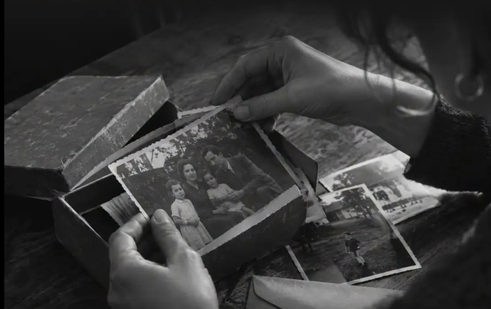
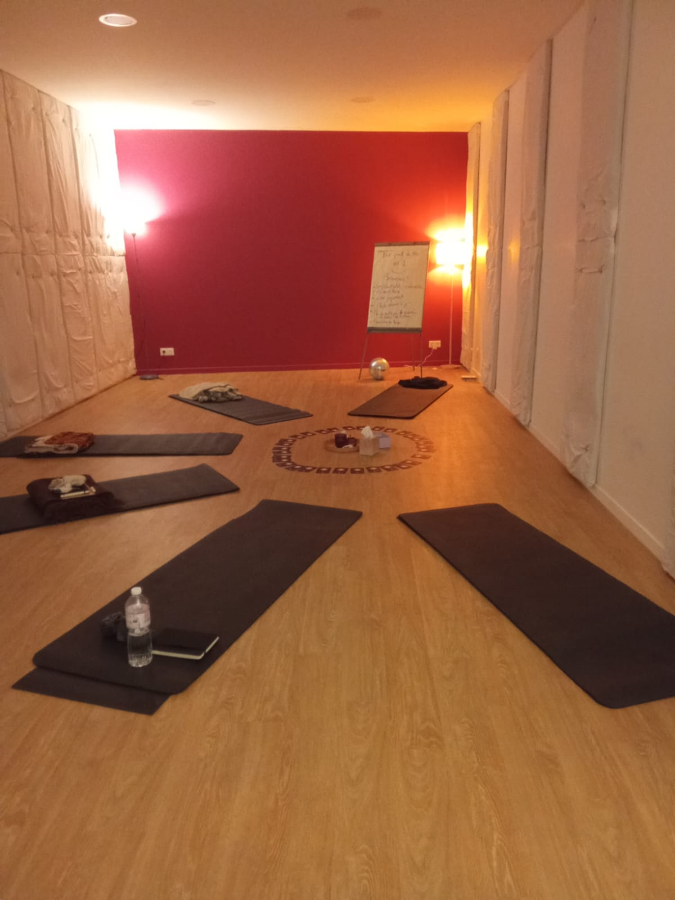
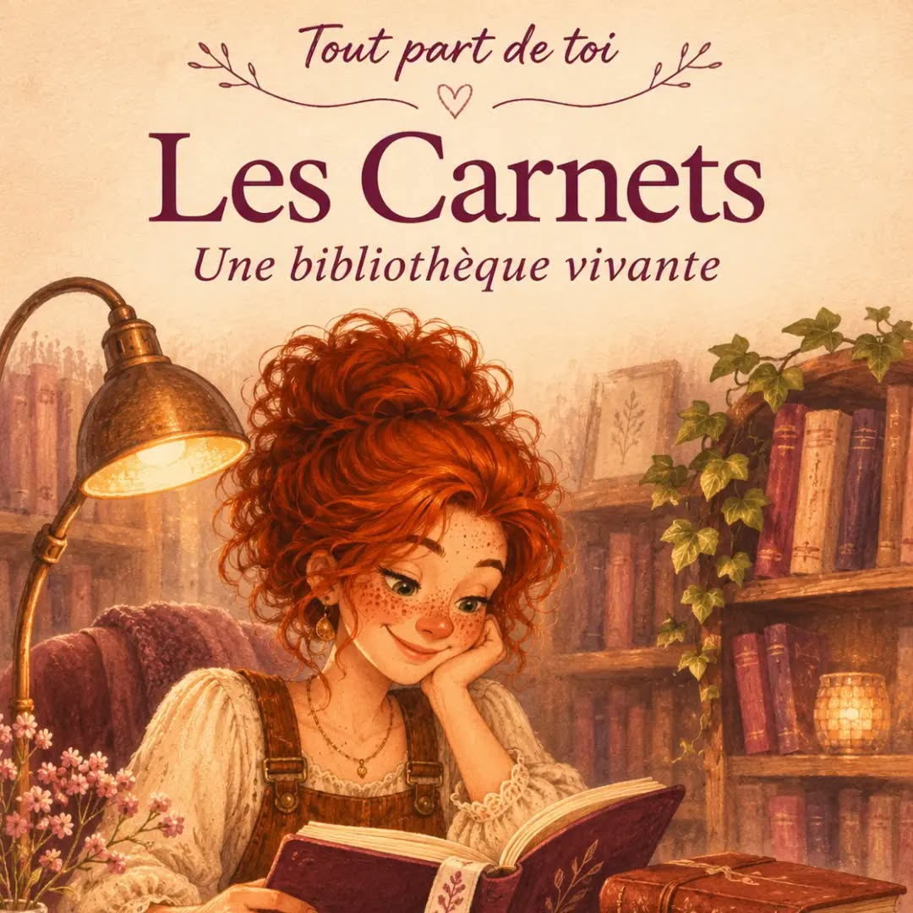

Parfois, ce qui ressemble à un arrêt est simplement un temps d’assimilation.
Il y a une phrase que j’entends souvent en thérapie :
« J’ai l’impression de régresser. »
Parce qu’une émotion revient.
Parce qu’on retombe dans une vieille habitude.
Parce qu’on se sent à nouveau fragile là où, quelques semaines auparavant, on pensait avoir avancé.
Parce qu’on comprend très bien quelque chose… mais qu’on ne parvient pas encore à le vivre autrement à chaque fois.
Et rapidement arrive cette idée :
« Tout ce travail n’a servi à rien. »
Mais non.
Pas forcément.
Il se peut même que quelque chose de très important soit justement en train de se passer.
Dans le cycle du contact en Gestalt, il existe un temps après l’expérience.
Un moment où ce qui vient d’être vécu n’a plus besoin d’être immédiatement analysé, travaillé, amélioré ou transformé.
Il a besoin d’être assimilé.
C’est un temps où nous intégrons ce que l’expérience nous a appris. Ce qui nous nourrit peut rester. Ce qui ne nous appartient pas peut être laissé.
Et petit à petit, l’expérience cesse d’être seulement quelque chose que nous avons compris.
Elle devient quelque chose que nous savons davantage de l’intérieur.
Et si je n’étais pas en train de régresser ? Et si j’étais simplement en train d’assimiler ?
À cette période de l’année, la nature nous donne une assez belle image de ce processus.
À première vue, il ne se passe plus grand-chose. Les feuilles tombent. La lumière diminue. La croissance visible ralentit.
Mais cela ne signifie pas que le vivant s’est arrêté.
Il conserve. Il trie. Il transforme. Il prépare. Il assimile.
Nos corps et nos psychismes connaissent eux aussi ces mouvements-là.
Nous ne sommes pas faits pour être constamment dans : faire — comprendre — progresser — produire — changer.
Il nous faut aussi des temps pour laisser les expériences descendre un peu plus profondément.
Pensez à quelque chose que vous avez beaucoup travaillé ces derniers mois.

Pour ce dernier Café Psycho de l’année 2026, nous irons explorer ce qui se transmet parfois sans que personne ne nous l’ait explicitement enseigné.
Des manières d’aimer. Des façons d’entrer en conflit. Des peurs. Des loyautés. Des rôles familiaux.
Des phrases que l’on n’a peut-être jamais entendues… mais que l’on semble pourtant connaître.
Certaines choses nous appartiennent. D’autres ont une histoire plus longue que nous.
Et parfois, comprendre ce que nous portons permet de commencer à choisir ce que nous souhaitons continuer à transmettre.
Comme toujours : des apports, des échanges, des expériences et une fiche support pour repartir avec quelques repères.
Il n’y aura pas de Café Psycho en décembre.
Nous nous retrouverons en janvier 2027.
Les prochains thèmes ne sont pas encore décidés. Une question qui revient souvent ? Un sujet que vous aimeriez explorer pendant deux heures avec d’autres ?
Suggérer un thème pour 2027
Les 28 et 29 novembre, il sera encore possible de venir découvrir l’atelier et de rejoindre le groupe.
Après ce week-end, le groupe sera fermé jusqu’à la fin du parcours en juin, afin de poursuivre le travail avec un cadre stable.
Tout part de Toi — L’atelier, c’est un week-end par mois pour retrouver le corps, le mouvement, la respiration, la créativité, le jeu, l’écriture, la voix et la relation.
On peut venir seul·e ou à deux : avec son ou sa partenaire, une amie, quelqu’un avec qui on souhaite partager cette expérience.
L’atelier peut particulièrement accompagner les périodes de transition, de fatigue ou de reprise après un burn-out. Mais il peut aussi être un espace de prévention, notamment lorsque l’on est entrepreneur·e, indépendant·e, aidant·e ou très habitué·e à porter beaucoup.
Et si vous hésitez encore, je propose un entretien téléphonique de 30 minutes offert, simplement pour faire connaissance, répondre à vos questions et vérifier ensemble que l’atelier correspond bien à ce que vous cherchez.
Demander mon entretien de 30 min Voir la vidéo de présentation
J’y archive progressivement mes anciens textes et j’en ajoute de nouveaux quand quelque chose me traverse : une question entendue souvent au cabinet, un étonnement, un coup de cœur, un coup de gueule, une réflexion sur la thérapie, les relations ou simplement notre manière d’être au monde.
Je n’écris pas à un rythme fixe. J’écris quand il y a quelque chose qui demande à devenir un texte.
Accéder à tous les CarnetsJe ne vais pas vous souhaiter d’avancer vite.
Ni même d’avancer tout le temps.
Je vais plutôt vous souhaiter de pouvoir reconnaître ces moments où quelque chose travaille en vous sans avoir besoin d’être immédiatement visible.
Parce qu’il y a des moments pour pousser.
Des moments pour fleurir.
Et d’autres où le vivant fait quelque chose de beaucoup plus discret :
Belle traversée de novembre.